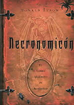
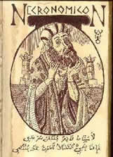
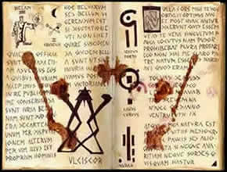

O Necronomicon (Livro
de Nomes Mortos) também conhecido por Al Azif
(Uivo dos Demônios Noturnos) foi escrito por Abdul
Alhazred, em torno de 730 d.C, em Damasco. Ao contrário
do que se pensa, não se trata somente de um compilado de
rituais e encantos, e sim de uma narrativa dividida em sete volumes,
numa linguagem obscura e abstrata. Alguns trechos
isolados descrevem rituais e fórmulas mágicas, de
forma que o leitor tenha uma idéia mais clara dos métodos
de evocações utilizados. Além de abordar
também as civilizações antediluvianas e mitologia
antiga, tendo sua provável base no Gênese, no Apocalipse
de São João e no apócrifo
Livro de Enoch. Reúne um alfabeto de 21 letras,
dezenove chaves (invocações) em linguagem enochiana,
mais de 100 quadros mágicos compostos de até 240
caracteres, além de grande conhecimento oculto.
Segundo o Necronomicon, muitas espécies
além do gênero humano habitaram a Terra. Estes seres
denominados Antigos, vieram de outras esferas semelhantes
ao Sistema Solar. São sobre-humanos detentores de poderes
devastadores, e sua evocação só é
possível através de rituais específicos descritos
no Livro. Até mesmo a palavra árabe para designar
antigo, é derivado do verbo hebreu cair.
Portanto, seriam Anjos Caídos.
O autor do Necronomicon, Abdul Alhazred, nasceu
em Sanna no Iêmen. Em busca de sabedoria, vagou de Alexandria
ao Pundjab, passando muitos anos no deserto despovoado do sul
da Arábia. Alhazred dominava vários idiomas e era
um excelente tradutor. Possuía também habilidades
como poeta, o que proporcionava um aspecto dispersivo em suas
obras, incluindo o Necronomicon. Abdul Alhazred era familiarizado
com a filosofia do grego Proclos, além de matemática,
astronomia, metafísica e cultura de povos pré-cristãos,
como os egípcios e os caldeus. Durante suas sessões
de estudo, o sábio acendia um incenso que combinava várias
ervas, entre elas o ópio e o haxixe.
Alhazred
adaptou a interpretação de alguns neoplatonistas
sobre o Necronomicon. Nesta versão, um grupo de anjos
enviado para proteger a Terra tomou as mulheres humanas como suas
esposas, procriando e gerando uma raça de gigantes que
se pôs a pecar contra a natureza, caçando aves, peixes,
répteis e todos os animais da Terra, consumindo a carne
e o sangue uns dos outros. Os anjos caídos lhes ensinaram
a confeccionar jóias, armas de guerra e cosméticos;
além de ensinar encantos, astrologia
e outros segredos.
Existe uma grande semelhança dos personagens
e enredos das narrações do Necronomicon em diversas
culturas. O mito escandinavo do apocalipse, chamado Ragnarok,
é sugerido em certas passagens do Livro; além dos
Djins Árabes e Anjos Hebraicos, que seriam versões
dos deuses escandinavos citados. Este conceito também é
análogo à tradição judaica dos Nephilins.
Uma tradução latina do Necronomicon
foi feita em 1487 pelo padre alemão Olaus Wormius, que
era secretário de Miguel Tomás de Torquemada, inquisidor-mor
da Espanha. É provável que Wormius tenha obtido
o manuscrito durante a perseguição aos mouros. O
Necronomicon deve ter exercido grande fascínio sobre Wormius,
para levá-lo a arriscar-se em traduzi-lo numa época
e lugar tão perigosos. Uma cópia do livro foi enviada
ao abade João Tritêmius, acompanhada de uma carta
que continha uma versão blasfema de certas passagens do
Gênese. Por sua ousadia, Wormius foi acusado de heresia
e queimado juntamente com as cópias de sua tradução.
Porém, especula-se que uma cópia teria sobrevivido
à inquisição, conservada e guardada no Vaticano.
O percurso histórico do Necronomicon continua
em 1586, quando o mago e erudito Jonh Dee anuncia a intenção
de traduzi-lo para o idioma inglês, tendo como base a versão
latina de Wormius. No entanto, o trabalho de Dee nunca foi impresso
mas chegou até as mãos de Elias Ashmole (1617-1692),
estudioso que os reescreveu para a biblioteca de Bodleian, em
Oxford. Assim, os escritos de Ashmole ficaram esquecidos por aproximadamente
250 anos, quando o mago britânico Aleister Crowley (1875-1947),
fundador do Thelema,
os encontrou em Bodleian. O Thelema é regido pelo Livro
da Lei, obra dividida em três capítulos na qual
fica evidente o plagio da obra de Jonh Dee. No ano de 1918, Crowley
conhece a modista Sônia Greene e passa alguns meses em sua
companhia. Sônia conhece o escritor Howard
Phillip Lovecraft em 1921, e casam-se em 1924. Neste período,
o autor lança o romance A Cidade Sem Nome e o
conto O Cão de Caça, onde menciona Abdul
Alhazred e o Necronomicon. Em 1926, um trecho da obra O Chamado
de C`Thullu menciona partes do Livro da Lei, de Crowley.
Portanto, o ressurgimento contemporâneo do
Necronomicon deve-se a Lovecraft, apesar de não haver evidências
de que o escritor tivesse acesso ao Livro dos Nomes Mortos.
Algumas suposições aludem a outras
cópias que teriam sido roubadas pelos nazistas na
década de 30. Ainda nesta hipótese, haveria
uma cópia do manuscrito original feita com pele e
sangue dos prisioneiros dos campos de concentração,
que na 2ª Guerra foi escondida em Osterhorn, uma região
montanhosa localizada próxima a Salzburg, Áustria.
Atualmente, não é provável que ainda
exista um manuscrito árabe do Necronomicon. Uma grande
investigação levou a uma busca na Índia,
no Egito e na biblioteca de Mecca, mas sem sucesso.
Por
Spectrum